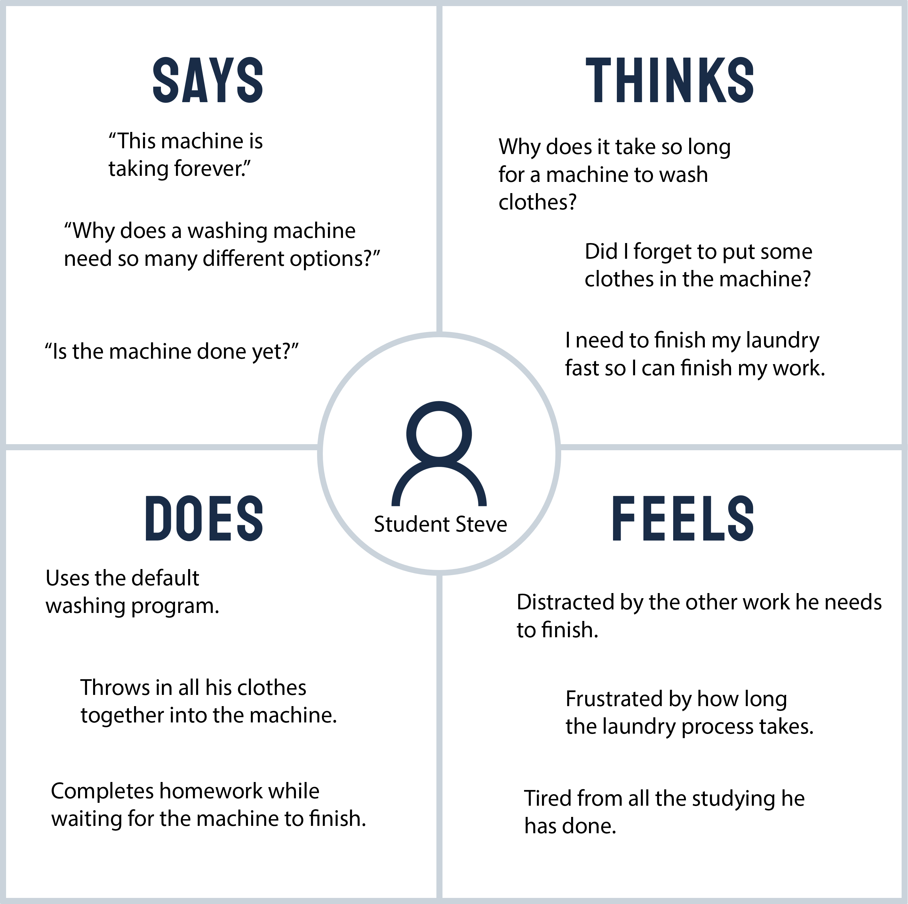
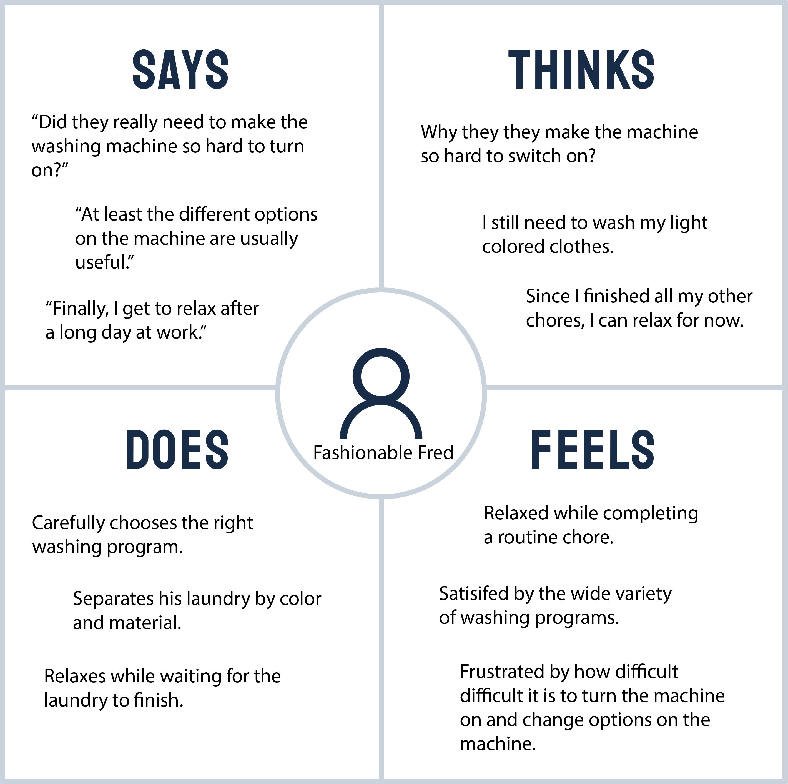

Personas and Storyboarding
Overview
The process of observing users interacting with an interface, interviewing these users, creating personas based on these users, and creating a storyboard based on a persona is a classic UX task. As a student of CS1300 (UI/UX), our first assignment was to experience this entire process to better understand what UI/UX designers do.
I chose my appartment's washing machine because I think it has a relatively complex and interesting interface. I then asked a couple of close friends to interact with my washing machine so that I could learn more about its interface.
My Interface

This washing machine interface allows users to select and customize different preset clothes washing programs. Besides the basic components present on all washing machines such as a door, a power button, etc., the washing machine also provides a dial and a variety of buttons so that users can choose a specific program and then customize said program.
Observations
I choose my users because I knew they had never interacted with this specific washing machine interface before. Therefore, I felt they would be able to give an unbiased viewpoint. Unfortunately, due to COVID-19 restrictions, my choice of users was not as representative of the general user population as I would have liked.
The following is a summary of my observations of 3 different users.
- All 3 users hesitated when trying to turn the machine on. All 3 incorrectly pressed the power button multiple times. One user even accidentally turned the machine off again as they had not realized they already turned the machine on.
- None of the users hesitated when adding soap to the laundry detergent compartment. They quickly opened the compartment and added the detergent.
- Some users decided to change the washing program and adjust some of the additional options. Other users simply used the default program and started the machine after loading in their laundry.
- All 3 users did not hesitate when starting the washing cycle. None of them pressed the start button multiple times or accidentally paused the wash cycle. One user did have troubling pausing the wash cycle after starting it.
Interviews
- 1. Could you describe your experience using the washing machine?
-
2. On the following scale, how would you rate your experience using the washing machine?
(1) Very Easy
(2) Easy
(3) Average
(4) Hard
(5) Very Hard - 3. Could you specifically comment on the interface of the washing machine?
- 4. Could you compare this washing machine's interface to other washing machines you may have used in the past?
- 5. Is there anything you found unexpected or confusing about the washing machine's interface?
- 6. Are there any changes you would make to the washing machine's interface?
- 7. Is there anything else you want to say about the washing machine that you did not get a chance earlier to say?
User 1
"I think they were more focused on how to fit as many features as possible that they didn’t think about how easy it would be to toggle those options."
User 1 said they found the washing machine very difficult to turn on. They said the interface did not make much sense, and although the power button was clearly labeled, the fact that the button did not offer any tactile feedback made it impossible to tell if pressing the button had any result. User 1 said that other washing machines they have used in the past had much fewer options, but they thought this simplification made those interfaces more intuitive. User 1 said to improve the interface of this washing machine, they would reduce the number of buttons present and would use buttons that provided tactile feedback.
User 2
User 2 also said they found the machine difficult to turn on. Also, starting the machine was easy, but pausing the machine was difficult as it required using a different keypress on the same button, which was unintuitive. They also said previous washing machines they have used had fewer features, but were also easier to use due to the simpler interface. User 2 said to improve the interface, they would either reduce the number of options on the machine or create a companion app that provided a fully interactive interface for the washing machine.
User 3
"The machine looks nice, but it doesn't have an intuitive interface."
User 3 found the machine unintuitive to start up and also found the graphic labels on the machine unclear. They said other washing machines they used had fewer options and were thus easier to use. Furthermore, they also found the grouping of options on the machine to be unintuitive. User 3 said they would change the start button to provide some kind of feedback, either visual or tactile, so that a user can tell if the machine is in the process of turning on. They would also change the grouping of buttons on the interface.
Personas
College Student Steve
Steve is a busy college student who doesn't have much time to spend on doing laundry. Steve is frustrated by all of the extra options on the washing machine that he doesn't use, but still needs to go through every time to start the machine. This persona represents my users who didn't care about the specific washing program and were frustrated by all of the extra options.
Fashionable Fred
Fred is a full time worker who really cares about his appearance and clothes. He is very busy during the day so he only does chores like laundry after a work day. Steve appreciates the numerous options available on the machine, but is frustrated by how hard it is to actually use the machine and its options. This persona represents my users who took the time to carefully choose a washing program and were also frustrated with how difficult the machine was to use.
Storyboard
Fred has come home from work, and needs to start doing his laundry.
Fred starts to load his laundry.
Fred closes the door, ready to turn on the machine.
Fred tries to turn on the machine.
Unable to turn on the machine, Fred slams the panel in frustration.
Eventually, Fred turns on the machine and selects his desired wash program.

Fred adds laundry detergent.
Fred starts the machine.
With the wash cycle finished, Fred unloads his clothes and prepares them for the dryer.
Conclusions
As someone with no UI/UX experience, I found this project to be really interesting. A washing machine is something I see and use everyday, so I didn't expect to learn much from simply observing people using my washing machine and then asking them questions about their experience. However, I found that I actually learned a lot of things that I would not have otherwise found out by watching other people use my washing machine and then asking them questions about it.